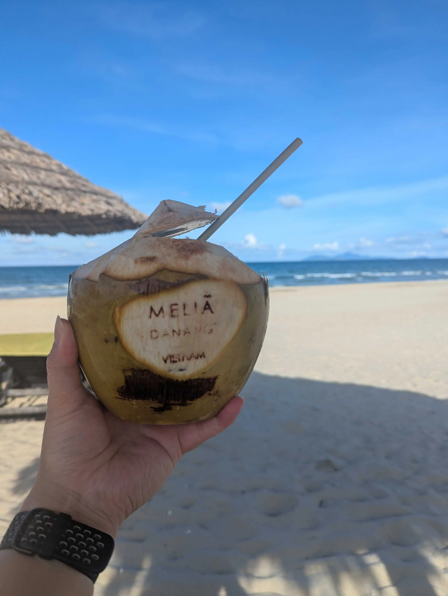

Kubernetesをどれで動かすか - 選択肢を比べてみる
NEW
3-shake に所属するエンジニアのブログ記事をまとめています。
 Reckoner
Reckoner SatohJohnSoftware Developer
SatohJohnSoftware Developer Sreake
Sreake Daisuke AkagawaFull Stack Engineer
Daisuke AkagawaFull Stack Engineer Amine IlidrissiFull Stack Application Engineer
Amine IlidrissiFull Stack Application Engineer Atsuya TsukadaSRE
Atsuya TsukadaSRE ayiboteInfrastructure Engineer
ayiboteInfrastructure Engineer bayobayo0324back/front/app Engineer
bayobayo0324back/front/app Engineer bells17Software Engineer
bells17Software Engineer fumiyanSoftware Engineer
fumiyanSoftware Engineer Gemma NaokiSRE
Gemma NaokiSRE Shuichi Inouelong-term internship student
Shuichi Inouelong-term internship student 長谷川 広樹なんらかのエンジニア
長谷川 広樹なんらかのエンジニア leeSRE
leeSRE Itaru OtaFull Stack Engineer
Itaru OtaFull Stack Engineer Ryosuke SakuraiSRE
Ryosuke SakuraiSRE Kohei NagaseSRE
Kohei NagaseSRE Kai SatoSRE
Kai SatoSRE Makoto KamonoSRE
Makoto KamonoSRE Shu KobuchiSoftware Developer
Shu KobuchiSoftware Developer Yuki IwasakiSRE
Yuki IwasakiSRE Kurita Keigolong-term internship student
Kurita Keigolong-term internship student kyohmizuSRE
kyohmizuSRE SUZUKI, MasashiSRE
SUZUKI, MasashiSRE Yushin MatsuuraFull Stack Engineer
Yushin MatsuuraFull Stack Engineer Yu KanekoSRE
Yu KanekoSRE Kobayashi Shunlong-term internship student
Kobayashi Shunlong-term internship student myamamotoSRE
myamamotoSRE NAKADATE NaokiDBRE
NAKADATE NaokiDBRE Takumi KadowakiSoftware Engineer @ Reckoner
Takumi KadowakiSoftware Engineer @ Reckoner ntkSRE
ntkSRE nwiizoSoftware Developer
nwiizoSoftware Developer Hiroki SakurabaSoftware DeveloperReito KoikeSRE
Hiroki SakurabaSoftware DeveloperReito KoikeSRE riiimparmEngineer
riiimparmEngineer RinrinFull Stack Application Engineer
RinrinFull Stack Application Engineer sakamaSRE
sakamaSRE satokenSRE
satokenSRE senoDBRE
senoDBRE Masaki HagaFull Stack Engineer
Masaki HagaFull Stack Engineer skikkhSRE
skikkhSRE Soichiro TsuchidaSRE
Soichiro TsuchidaSRE Sota NakanoSRE
Sota NakanoSRE Shohei TakamuraSRE
Shohei TakamuraSRE Soichiro TayaSRE
Soichiro TayaSRE Takuya TezukaJB
Takuya TezukaJB
TakumiTakasugiDBRE toshikishSRE
toshikishSRE tozastationSRE
tozastationSRE nobuSRE
nobuSRE Yusuke SakuraiSRE
Yusuke SakuraiSRE yteraokaSRE
yteraokaSRE Yuta FujiiEngineer
Yuta FujiiEngineer Yutaro ShirayamaSRE
Yutaro ShirayamaSRE Yunosuke YamadaFull Stack Engineer
Yunosuke YamadaFull Stack Engineer